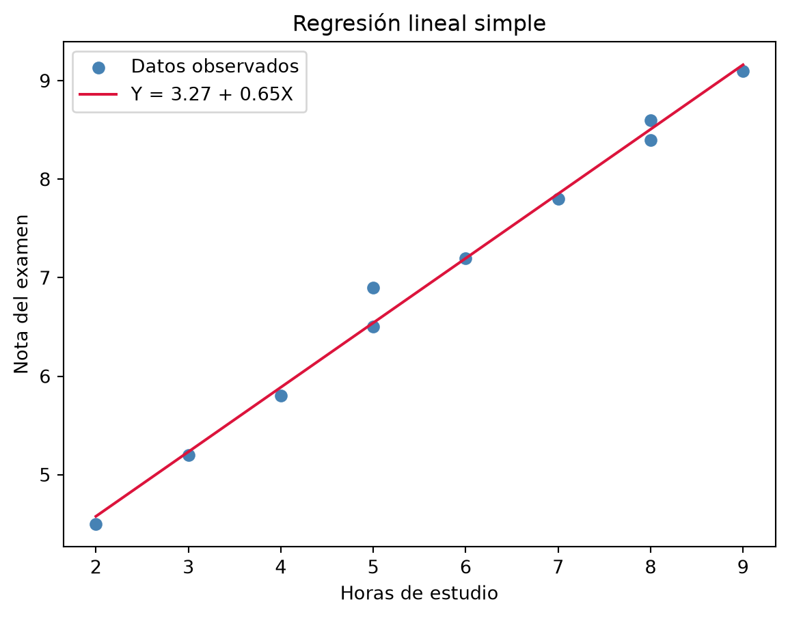

flowchart LR
A["Dos variables:<br/>X e Y"] --> B["Covarianza / Correlación<br/>¿van juntas?"]
B --> C["Regresión Lineal<br/>Y = β₀ + β₁X"]
C --> D["Contraste sobre β₁<br/>¿la relación es real o azar?"]
10 Correlación y Regresión Lineal
10.1 5.1 Introducción
Hasta ahora hemos trabajado con una sola variable a la vez: describirla (Módulo 1), modelar su incertidumbre (Módulos 2-3), y estimar o contrastar un parámetro suyo a partir de una muestra (Módulo 4). En este último módulo damos un paso natural: ¿qué pasa cuando tenemos dos variables y queremos saber si están relacionadas?
Ejemplos típicos: horas de estudio y nota de un examen, inversión en publicidad y ventas, temperatura y consumo eléctrico. En todos ellos nos interesan dos preguntas distintas: ¿existe relación? (correlación) y, si la hay, ¿cómo la usamos para predecir? (regresión).
10.2 5.2 Covarianza y Correlación
La covarianza mide si dos variables tienden a moverse juntas (en la misma dirección o en direcciones opuestas):
\[ \text{Cov}(X, Y) = \frac{1}{n-1}\sum_{i=1}^{n}(x_i - \bar{x})(y_i - \bar{y}) \]
Su signo indica la dirección de la relación (positiva o negativa), pero su magnitud depende de las unidades de \(X\) e \(Y\), lo que dificulta comparar covarianzas entre distintos pares de variables. Para resolverlo, normalizamos con el coeficiente de correlación de Pearson:
\[ r = \frac{\text{Cov}(X, Y)}{s_X \, s_Y} \]
\(r\) siempre está entre \(-1\) y \(1\):
- \(r\) cercano a \(1\): relación lineal positiva fuerte.
- \(r\) cercano a \(-1\): relación lineal negativa fuerte.
- \(r\) cercano a \(0\): poca o ninguna relación lineal (¡ojo! podría haber una relación no lineal fuerte y aun así \(r \approx 0\)).
Código
from stats_toolkit import regression as reg
horas_estudio = [2, 3, 4, 5, 5, 6, 7, 8, 8, 9]
nota_examen = [4.5, 5.2, 5.8, 6.5, 6.9, 7.2, 7.8, 8.4, 8.6, 9.1]
r = reg.correlation(horas_estudio, nota_examen)
print(f"Correlación de Pearson: r = {r:.3f}")Correlación de Pearson: r = 0.996Correlación no implica causalidad. Que dos variables estén correlacionadas no significa que una cause la otra — puede haber una tercera variable oculta (variable de confusión), o la relación puede ser pura coincidencia en los datos disponibles. La correlación es una herramienta descriptiva, no una prueba causal.
10.3 5.3 Regresión Lineal Simple
Mientras que la correlación solo nos dice cuán fuerte es la relación lineal, la regresión lineal va más allá: nos da un modelo concreto para predecir \(Y\) a partir de \(X\).
\[ Y = \beta_0 + \beta_1 X + \varepsilon \]
- \(\beta_0\) (intercepto): el valor esperado de \(Y\) cuando \(X = 0\).
- \(\beta_1\) (pendiente): cuánto cambia \(Y\), en promedio, por cada unidad que aumenta \(X\).
- \(\varepsilon\) (error): la parte de \(Y\) que el modelo no explica.
El método de mínimos cuadrados ordinarios (OLS) encuentra los valores de \(\beta_0\) y \(\beta_1\) que minimizan la suma de los errores al cuadrado, y tienen una solución cerrada muy simple:
\[ \hat{\beta}_1 = \frac{\text{Cov}(X, Y)}{\text{Var}(X)} \qquad \hat{\beta}_0 = \bar{y} - \hat{\beta}_1 \bar{x} \]
Código
beta0, beta1 = reg.simple_linear_regression(horas_estudio, nota_examen)
print(f"Intercepto (β0): {beta0:.3f}")
print(f"Pendiente (β1): {beta1:.3f}")
print(f"Interpretación: cada hora extra de estudio se asocia con +{beta1:.2f} puntos en el examen")Intercepto (β0): 3.267
Pendiente (β1): 0.655
Interpretación: cada hora extra de estudio se asocia con +0.65 puntos en el examenCódigo
import matplotlib.pyplot as plt
import numpy as np
x_line = np.linspace(min(horas_estudio), max(horas_estudio), 100)
y_line = reg.predict(x_line, beta0, beta1)
plt.scatter(horas_estudio, nota_examen, color="steelblue", label="Datos observados")
plt.plot(x_line, y_line, color="crimson", label=f"Y = {beta0:.2f} + {beta1:.2f}X")
plt.xlabel("Horas de estudio")
plt.ylabel("Nota del examen")
plt.title("Regresión lineal simple")
plt.legend()
plt.show()
10.4 5.4 Bondad de Ajuste: \(R^2\)
¿Qué tan bien explica el modelo los datos? El coeficiente de determinación \(R^2\) mide qué proporción de la variabilidad total de \(Y\) queda explicada por el modelo:
\[ R^2 = 1 - \frac{\sum_i (y_i - \hat{y}_i)^2}{\sum_i (y_i - \bar{y})^2} \]
\(R^2\) va de 0 (el modelo no explica nada) a 1 (el modelo explica toda la variabilidad). En regresión lineal simple, \(R^2\) es exactamente el cuadrado del coeficiente de correlación de Pearson: \(R^2 = r^2\).
Código
r2 = reg.r_squared(horas_estudio, nota_examen, beta0, beta1)
print(f"R² = {r2:.3f} (r² = {r**2:.3f})")
print(f"El modelo explica el {r2*100:.1f}% de la variabilidad de la nota")R² = 0.992 (r² = 0.992)
El modelo explica el 99.2% de la variabilidad de la nota10.5 5.5 ¿La relación es real o podría deberse al azar?
Aquí es donde reconectamos con el Módulo 4: \(\hat{\beta}_1\) es un estimador calculado a partir de una muestra, así que tiene su propio error estándar, y podemos plantear un contraste de hipótesis sobre él.
\[ H_0: \beta_1 = 0 \quad \text{(no hay relación lineal real)} \qquad H_1: \beta_1 \neq 0 \]
El estadístico de prueba sigue una distribución t de Student con \(n-2\) grados de libertad (perdemos 2 grados de libertad por estimar \(\beta_0\) y \(\beta_1\)):
\[ t = \frac{\hat{\beta}_1}{SE(\hat{\beta}_1)} \]
Código
t_stat, p_value = reg.t_test_slope(horas_estudio, nota_examen, beta0, beta1)
print(f"t = {t_stat:.3f}, p-valor = {p_value:.6f}")
if p_value < 0.05:
print("p-valor < 0.05: rechazamos H0, la relación entre horas de estudio y nota es estadísticamente significativa")
else:
print("No hay evidencia suficiente de una relación lineal real")t = 31.057, p-valor = 0.000000
p-valor < 0.05: rechazamos H0, la relación entre horas de estudio y nota es estadísticamente significativaY, como en el Módulo 4, también podemos construir un intervalo de confianza para \(\beta_1\) en vez de limitarnos a un sí/no:
Código
lower, upper = reg.confidence_interval_slope(horas_estudio, nota_examen, beta0, beta1, confidence=0.95)
print(f"IC 95% para β1: ({lower:.3f}, {upper:.3f})")IC 95% para β1: (0.606, 0.704)10.6 5.6 Cierre del curso
Con este módulo completamos el recorrido de Estadística Básica: describir datos (Módulo 1), modelar la incertidumbre de sucesos (Módulo 2) y de variables aleatorias completas (Módulo 3), usar esas distribuciones para estimar y contrastar parámetros poblacionales (Módulo 4), y finalmente estudiar y validar relaciones entre variables (Módulo 5).
Estas cinco piezas son la base sobre la que se construye prácticamente cualquier análisis de datos aplicado: desde un experimento de A/B testing hasta un modelo de machine learning — de hecho, la regresión lineal que acabamos de ver es, en sí misma, uno de los algoritmos de machine learning más usados, y el Naive Bayes que vimos como cierre del Módulo 2 es otro. Si en el futuro amplías este curso, este es el punto natural desde el que dar el salto hacia regresión múltiple, clasificación y otros modelos predictivos.